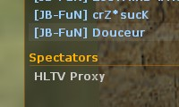
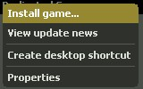
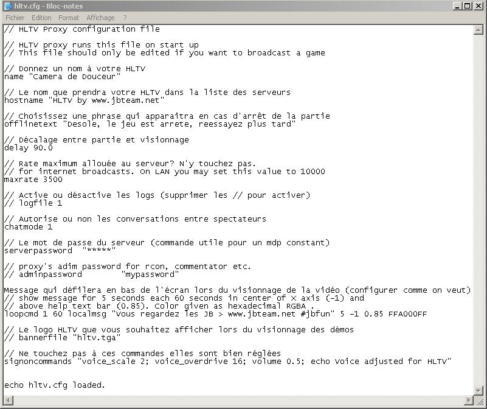
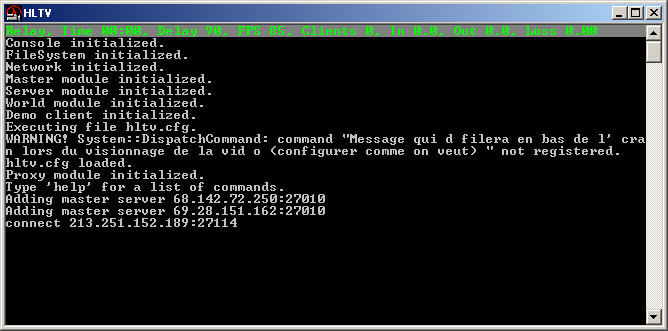
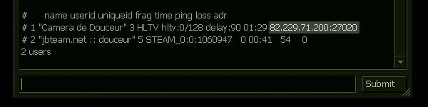

Dans ce tutoriel, je vous apprendrai à configurer et à utiliser le logiciel que Steam met à votre disposition. Vous pourrez alors enregistrer toutes vos parties Counter-Strike avec aisance et les distribuer à vos coéquipiers. ;)
Ce tutoriel est accessible à tous ceux qui jouent à CS. Aucun langage n'est à connaître. Vous êtes toujours là ? Alors c'est parti ! :D
Tout d'abord, HLTV est l'acronyme de Half Life TeleVision. C'est un module qui vous permet d'enregistrer une partie Counter-Strike, de la diffuser en différé sur le Net et de l'enregistrer sur votre disque dur.
Mais attention, il ne faut pas qu'il y ait trop de spectateurs ou vous risquez de lagger au-delà du taux autorisé. ^^ Cinq spectateurs est le maximum à respecter.
Si vous faites des matchs de temps à autres, vous avez sûrement dû en avoir vu un. Il est dans la liste des joueurs (que l'on affiche avec la touche Tabulation, la plupart du temps), dans la partie spectateurs :

L'avantage d'un module HLTV
La plupart d'entre vous connaissent (je l'espère) la commande record à taper dans la console pour s'enregistrer, mais uniquement de son point de vue. On appelle cela une démo in eyes, c'est-à-dire que d'après la démo obtenue, vous ne pourrez uniquement visionner que vos actions. L'avantage, non négligeable, d'un module HLTV est que toute la partie est enregistrée. Vous pouvez voir la vue subjective de tous les joueurs présents sur le serveur (terroristes et CT), vous pouvez même changer de vue. Bref, vous faites comme lorsque vous êtes en spectateurs sur un serveur.
Maintenant que vous maîtrisez la théorie, passons à la pratique si vous êtes toujours d'attaque...
Tout d'abord, démarrez Steam et rendez-vous dans l'onglet Outils (ou Tools, en anglais) de Jeux (Games). Faites un clic droit sur Dedicated Server puis sélectionnez Installer (ou Install game...) :

Attendez que Steam télécharge les fichiers nécéssaires à l'installation de Dedicated Server. Une fois le logiciel installé, rendez-vous dans le dossier :
C:\Steam\SteamApps\votreadresse\dedicated server.
C'est dans ce dossier qu'a été installé Dedicated Server, et donc HLTV...
Configuration
Le fichier qui nous intéresse est hltv.cfg. Vous n'êtes pas obligés d'y toucher, mais c'est préférable pour une configuration optimale de l'HLTV.
Comment est-ce que j'ouvre un fichier .cfg, moi ?
Le Bloc-notes de Windows est tout indiqué pour cette tâche. :)
Ce fichier, il fonctionne comme le config.cfg du répertoire de Counter-Strike ?
Eh bien, les commandes n'ont pas grand-chose à voir mais son rôle reste le même, il est la base de la configuration du module HLTV.
Ce fichier, le voici en détail :

Configurez comme indiqué sur le screenshot. Les valeurs utilisées ici sont celles que j'utilise.
Pour finir, rendez-vous dans votre dossier dedicated server et créez un nouveau dossier nommé cstrike. C'est dans ce dossier que seront enregistrées vos parties.
Vous avez maintenant un module HLTV configuré aux petits oignons. C'est bien mais il faut désormais le faire un peu fonctionner. :p Pour en connaître son utilisation, je vous invite à suivre la prochaine partie de ce tutoriel.
Toujours dans le dossier dedicated server, cliquez sur le fichier hltv.exe. C'est le fichier qui permet de lancer (enfin ^^ ) HLTV.
S'ouvre alors une fenêtre plutôt rudimentaire :

Connectons-nous au serveur. Si le serveur auquel vous voulez vous connecter dispose d'un mot de passe (pour un match, par exemple), tapez la commande suivante : serverpassword motdepasse Exemple : serverpassword war
Puis, pour vous connecter au serveur : connect ipduserveur Exemple : connect 213.251.152.189:27114
Pour rejoindre votre HLTV, il existe deux façons. Soit vous connaissez votre adresse IP et il suffit juste de rajouter : 27020. Exemple : si votre adresse IP est : 68.35.340.21, l'adresse de l'HLTV sera alors 68.35.340.21:27020.
Si vous ne connaissez pas votre adresse IP (ça peut arriver), connectez-vous sur le serveur sur lequel votre HLTV est mis en place et tapez status dans la console de Counter-Strike :

Ici, l'adresse de l'HLTV est : 82.229.71.200:27020.
C'est bien beau tout ça, mais une fois que j'ai l'adresse de HLTV, j'en fais quoi ?
Pour vous connecter au module HLTV indiqué, il vous suffit de taper dans la console de Counter-Strike : connect ip Exemple : connect 213.251.152.189:27114
Si vous vous connectez toujours au même serveur, il est préférable d'automatiser l'opération expliquée ci-dessus.
Automatiser HLTV
Faites un clic droit sur le raccourci créé préalablement, sélectionnez Propriétés puis dans Cible, tapez la commande suivante :
-port 27016 +serverpassword motdepasse +connect 62.15.442.55:27095 (remplacez par votre IP et le port de votre choix). Comme je sais que vous aimez les exemples : C:\Steam\SteamApps\votreadresse\dedicated server\hltv.exe -port 27016 +serverpassword war +connect 213.251.152.189:27114
Désormais, lorsque vous cliquerez sur le raccourci, votre HLTV se connectera tout seul au serveur.
C'est fait, vous savez comment on manipule un module HLTV. Vous avez vu, ce n'est pas si compliqué que ça ! :lol:
La prochaine partie (et dernière, rassurez-vous) est basée sur les commandes de votre HLTV. Elles sont indispensables pour qui veut enregistrer ses parties.
Attaquons-nous maintenant aux commandes utiles pour manier votre HLTV.
Mais je vais tout de même vous détailler les commandes fondamentales d'HLTV. Les balises (< et >) ne sont pas à prendre en compte. ^^
record <nomdelademo> Permet de commencer l'enregistrement de la partie. La démo sera stockée dans le même répertoire que votre HLTV, dossier cstrike.
stop Commande qui permet d'arrêter l'enregistrement de la démo (à la fin de votre match, par exemple).
exit Quitter HLTV.
publicgame <1/0> Autorise (1) ou non (0) la venue de spectateurs sur votre HLTV. Utile si vous voulez ne pas lagger.
maxclients <X> Permet de définir un nombre maximum de spectateurs pouvant rejoindre le HLTV (0 pour fermer votre HLTV). Comme dit précédemment, 5 est une valeur honorable.
spectatorpassword <pass> Permet de mettre un mot de passe pour rejoindre l'HLTV. Utile si vous voulez sélectionner votre public. ^^
autoretry <1/0> Sur 1, l'HLTV se reconnectera automatiquement au serveur en cas de déconnexion. Pratique !
Avec tout ça, il y a déjà de quoi faire. :-°
Eh bien voilà, vous connaissez désormais les bases de HLTV pour Counter-Strike ; et même un peu plus. Vous vous apercevrez vite que cet outil est indispensable pour conserver et diffuser ses matchs. Votre videomaker en sera ravi. ;)
Sachez tout de même que tous les matchs, à un niveau professionnel, sont enregistrés à l'aide d'un module HLTV. Les démos sont ensuite mises à disposition du public. Vous pouvez en trouver à ces deux adresses : hltv.org et hltv-fr.com. Pour l'exploitation de ces démos (lecture, montage, etc.), je ne peux que vous conseiller le tutoriel réalisé par un autre Zér0, Mister J sur la réalisation d'une vidéo Counter-Strike.
En vous souhaitant une très bonne fin de journée :soleil: